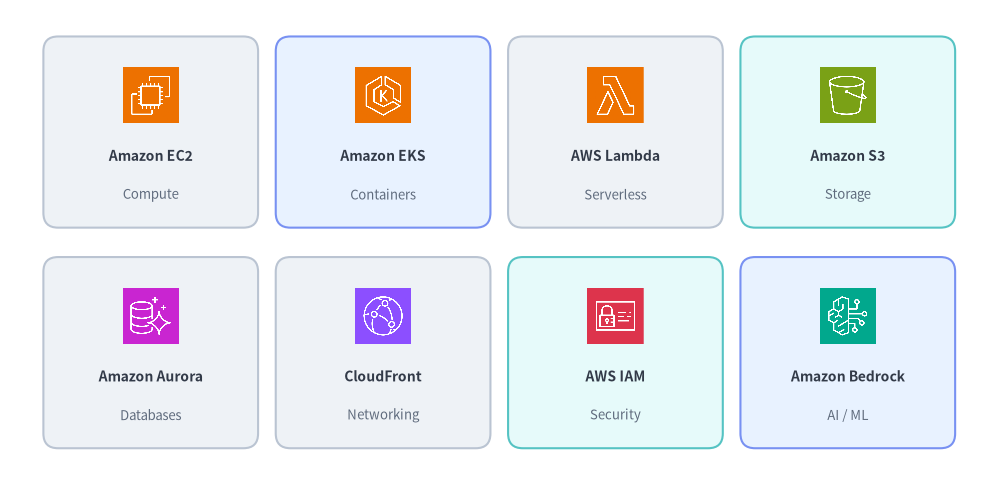
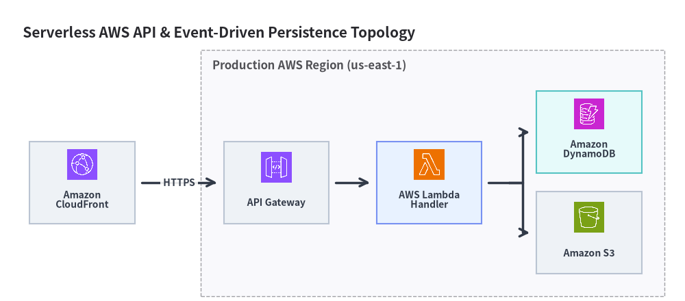

Amazon Web Services (AWS) アイコン
Drawlib は、drawlib.icons.aws および AwsIcon Enum を通じて、329 個の高解像度（512×512）な Amazon Web Services (AWS) アーキテクチャアイコンおよびカテゴリアイコンを提供します。あわせて アイコン概要、Google Cloud (GCP) アイコン、Microsoft Azure アイコン、クラウド・オリジナルクラウドアイコン も参照してください。

Source Code
from drawlib.canvas import save, setup
from drawlib.icons import aws
from drawlib.shapes import rectangle
from drawlib.styles import Styles
from drawlib.text import text
setup(width=136, height=66)
row1 = [
("Amazon EC2", "Compute", aws.ec2, Styles.Neutral),
("Amazon EKS", "Containers", aws.elastic_kubernetes_service, Styles.PrimaryNeutral),
("AWS Lambda", "Serverless", aws.aws_lambda, Styles.Neutral),
("Amazon S3", "Storage", aws.simple_storage_service, Styles.SecondaryNeutral),
]
row2 = [
("Amazon Aurora", "Databases", aws.aurora, Styles.Neutral),
("CloudFront", "Networking", aws.cloudfront, Styles.Neutral),
("AWS IAM", "Security", aws.identity_and_access_management, Styles.SecondaryNeutral),
("Amazon Bedrock", "AI / ML", aws.bedrock, Styles.PrimaryNeutral),
]
for row_idx, items in enumerate([row1, row2]):
cy = 48.0 if row_idx == 0 else 18.0
for col_idx, (title, cat, icon_fn, card_st) in enumerate(items):
cx = 20.5 + col_idx * 31.6
rectangle((cx, cy), width=29.2, height=26.0, style=card_st.patch(shape_r=2))
icon_fn((cx, cy + 5.0), width=8.5, style=Styles.Primary)
text((cx, cy - 3.2), title, style=Styles.DarkBold.patch(text_size=10.0))
text((cx, cy - 8.5), cat, style=Styles.Muted.patch(text_size=9.5))
save()
1. API シグネチャと AwsIcon Enum の使い方
drawlib.icons.aws のすべての AWS アイコン関数は中心アンカー (cx, cy) の呼び出しシグネチャを共有しており、ArchitectureDiagram および SequenceDiagram では強く型付けされた AwsIcon Enum をそのまま指定できます。
from drawlib.diagrams.architecture import ArchitectureDiagram, AwsIcon, Node
from drawlib.icons import aws
from drawlib.styles import Styles
# 1. Direct canvas icon rendering at center (cx, cy) with 1:1 square aspect ratio
aws.aws_lambda((40, 25), width=10.0, style=Styles.Primary, variant="default")
# 2. High-level ArchitectureDiagram node using AwsIcon Enum
d = ArchitectureDiagram()
api_node = d.add(
Node("API Gateway", width=25, height=18, icon=AwsIcon.API_GATEWAY, icon_size=7.5),
xy=(10.0, 10.0),
)
パラメータ / Style 属性 |
型 | デフォルト | 説明 |
|---|---|---|---|
xy |
tuple[float, float] |
必須 | アイコンの中心座標 (cx, cy)（halign="center"、valign="center"）。 |
width |
float |
必須 | キャンバス単位での水平幅。高さは自動スケーリングされます（1:1）。 |
style |
Style |
必須 | alpha（0.0–1.0 の不透明度）、angle（回転）、image_tint_color、image_border_* を制御します。 |
variant |
Literal["default"] |
"default" |
ビジュアルバリアント（"default" は公式 AWS アーキテクチャパレット）。 |
AwsIcon.<NAME> |
AwsIcon |
— | aws.<name> に対応する大文字の StrEnum メンバー（例: AwsIcon.AWS_LAMBDA -> aws.aws_lambda）。 |
2. 主要インフラ・データサービスショーケース（全 329 正規アイコン）
以下の 12 カード（2×6）カタログでは、AWS の基盤となるインフラストラクチャ、データ分析、統合、オブザーバビリティの主要サービスを紹介しています。
Source Code
from drawlib.canvas import save, setup
from drawlib.icons import aws
from drawlib.shapes import rectangle
from drawlib.styles import Styles
from drawlib.text import text
setup(width=148, height=66)
row1 = [
("API Gateway", "Ingress", aws.api_gateway, Styles.Neutral),
("ALB / ELB", "Load Balancing", aws.elastic_load_balancing, Styles.Neutral),
("AWS Fargate", "Containers", aws.fargate, Styles.PrimaryNeutral),
("DynamoDB", "NoSQL DB", aws.dynamodb, Styles.SecondaryNeutral),
("ElastiCache", "In-Memory", aws.elasticache, Styles.Neutral),
("EventBridge", "Event Bus", aws.eventbridge, Styles.Neutral),
]
row2 = [
("Amazon SQS", "Queue", aws.simple_queue_service, Styles.Neutral),
("Step Functions", "Workflows", aws.step_functions, Styles.PrimaryNeutral),
("Kinesis", "Streaming", aws.kinesis_data_streams, Styles.Neutral),
("Redshift", "Warehouse", aws.redshift, Styles.SecondaryNeutral),
("SageMaker", "ML Platform", aws.sagemaker, Styles.Neutral),
("CloudWatch", "Observability", aws.cloudwatch, Styles.Neutral),
]
for row_idx, items in enumerate([row1, row2]):
cy = 48.0 if row_idx == 0 else 18.0
for col_idx, (title, sub, icon_fn, card_st) in enumerate(items):
cx = 15.0 + col_idx * 23.6
rectangle((cx, cy), width=21.8, height=26.0, style=card_st.patch(shape_r=2))
icon_fn((cx, cy + 5.0), width=8.0, style=Styles.Primary)
text((cx, cy - 3.2), title, style=Styles.DarkBold.patch(text_size=10.0))
text((cx, cy - 8.5), sub, style=Styles.Muted.patch(text_size=9.5))
save()
2.1. 全 329 種類の AWS アイコン カテゴリ別リファレンス一覧
drawlib.icons.aws の全 329 個の正規関数は厳密な 1 対 1 の命名規則に従っています（AwsIcon には対応する大文字メンバーが存在します）。
| カテゴリ | 個数 | 正規関数 drawlib.icons.aws.<name>（AwsIcon.<NAME>） |
|---|---|---|
| コンピューティング | 28 | auto_scaling, batch, braket, compute_optimizer, ec2, ec2_auto_scaling, ec2_image_builder, elastic_beanstalk, elastic_fabric_adapter, elastic_vmware_service, gamelift_servers, gamelift_streams, lightsail, lightsail_for_research, local_zones, nitro_enclaves, outposts_family, outposts_rack, outposts_servers, parallel_cluster, parallel_computing_service, simspace_weaver, thinkbox_deadline, thinkbox_frost, thinkbox_krakatoa, thinkbox_stoke, thinkbox_xmesh, wavelength |
| コンテナ・サーバーレス | 15 | app_mesh, app_runner, aws_lambda, bottlerocket, ecs_anywhere, eks_anywhere, eks_distro, elastic_container_registry, elastic_container_service, elastic_kubernetes_service, express_workflows, fargate, red_hat_openshift_service_on_aws, serverless_application_repository, step_functions |
| ストレージ | 19 | backint_agent, backup, datasync, efs, elastic_block_store, elastic_disaster_recovery, file_cache, fsx, fsx_for_lustre, fsx_for_netapp_ontap, fsx_for_openzfs, fsx_for_wfs, s3_on_outposts, simple_storage_service, simple_storage_service_glacier, snowball, snowball_edge, storage_gateway, transfer_family |
| データベース | 11 | aurora, database_migration_service, documentdb, dynamodb, elasticache, keyspaces, memorydb, neptune, oracle_database_at_aws, rds, timestream |
| ネットワーキング・CDN | 20 | api_gateway, appsync, client_vpn, cloud_map, cloud_wan, cloudfront, direct_connect, elastic_load_balancing, global_accelerator, ground_station, interconnect, location_service, privatelink, route_53, site_to_site_vpn, telco_network_builder, transit_gateway, verified_access, virtual_private_cloud, vpc_lattice |
| セキュリティ・アイデンティティ | 28 | artifact, audit_manager, certificate_manager, cloud_directory, cloudhsm, cognito, detective, directory_service, firewall_manager, guardduty, iam_identity_center, identity_and_access_management, inspector, key_management_service, macie, network_firewall, payment_cryptography, private_certificate_authority, resource_access_manager, secrets_manager, security_agent, security_hub, security_incident_response, security_lake, shield, signer, verified_permissions, waf |
| 分析・統合 | 50 | appfabric, appflow, athena, b2b_data_interchange, clean_rooms, cloudsearch, data_exchange, data_firehose, data_transfer_terminal, datazone, elemental_appliances_software, elemental_conductor, elemental_delta, elemental_inference, elemental_link, elemental_live, elemental_mediaconnect, elemental_mediaconvert, elemental_medialive, elemental_mediapackage, elemental_mediastore, elemental_mediatailor, elemental_server, emr, end_user_messaging, entity_resolution, eventbridge, finspace, glue, glue_databrew, interactive_video_service, kinesis, kinesis_data_streams, kinesis_video_streams, lake_formation, managed_blockchain, managed_service_for_apache_flink, managed_streaming_for_apache_kafka, managed_workflows_for_apache_airflow, mq, opensearch_service, pinpoint, pinpoint_apis, quick, redshift, rtb_fabric, simple_email_service, simple_notification_service, simple_queue_service, supply_chain |
| AI・機械学習 | 41 | apache_mxnet_on_aws, augmented_ai_a2i, bedrock, bedrock_agentcore, codeguru, codewhisperer, comprehend, comprehend_medical, deep_learning_amis, deep_learning_containers, deepracer, devops_agent, devops_guru, elastic_inference, forecast, fraud_detector, healthimaging, healthlake, healthomics, healthscribe, kendra, lex, lookout_for_equipment, lookout_for_vision, monitron, neuron, nova, panorama, personalize, polly, pytorch_on_aws, q, rekognition, sagemaker, sagemaker_ai, sagemaker_ground_truth, sagemaker_studio_lab, tensorflow_on_aws, textract, transcribe, translate |
| 開発者ツール・管理 | 91 | activate, amplify, app_studio, appconfig, application_auto_scaling, application_discovery_service, application_migration_service, application_recovery_controller, billing_conductor, budgets, chatbot, chime, chime_sdk, cloud9, cloud_control_api, cloud_development_kit, cloudformation, cloudshell, cloudtrail, cloudwatch, codeartifact, codebuild, codecatalyst, codecommit, codedeploy, codepipeline, command_line_interface, config, connect, console_mobile_application, control_tower, corretto, cost_and_usage_report, cost_explorer, dcv, deadline_cloud, device_farm, distro_for_opentelemetry, fault_injection_service, finops_agent, freertos, health_dashboard, infrastructure_composer, iot_core, iot_device_defender, iot_device_management, iot_events, iot_expresslink, iot_fleetwise, iot_greengrass, iot_sitewise, iot_twinmaker, iq, launch_wizard, license_manager, mainframe_modernization, managed_grafana, managed_service_for_prometheus, managed_services, management_console, marketplace_dark, marketplace_light, migration_evaluator, open_3d_engine, organizations, partner_central, professional_services, proton, repost, repost_private, reserved_instance_reporting, resilience_hub, resource_explorer, savings_plans, service_catalog, service_management_connector, support, sustainability, systems_manager, tools_and_sdks, training_certification, transform, trusted_advisor, user_notifications, well_architected_tool, wickr, workdocs, workdocs_sdk, workmail, workspaces, x_ray |
| カテゴリバッジ | 26 | category_analytics, category_application_integration, category_artificial_intelligence, category_blockchain, category_business_applications, category_cloud_financial_management, category_compute, category_containers, category_customer_enablement, category_customer_experience, category_databases, category_developer_tools, category_end_user_computing, category_front_end_web_mobile, category_games, category_internet_of_things, category_management_tools, category_media_services, category_migration_modernization, category_multicloud_and_hybrid, category_networking_content_delivery, category_quantum_technologies, category_satellite, category_security_identity, category_serverless, category_storage |
3. AWS クラウドアーキテクチャ構成例（ArchitectureDiagram と AwsIcon）
ArchitectureDiagram と AwsIcon を組み合わせることで、ノードカードの自動レイアウトと直交コネクタの自動ルーティングを備えた VPC トポロジを構築できます。
from drawlib.canvas import save, setup
from drawlib.diagrams.architecture import ArchitectureDiagram, AwsIcon, Node, NodeGroup
from drawlib.styles import Styles
setup(width=150, height=66)
d = ArchitectureDiagram(
node_style=Styles.Primary,
node_text_style=Styles.DarkBold.patch(text_size=10.0),
edge_style=Styles.DarkBold,
edge_text_style=Styles.DarkBold.patch(text_size=10.0),
node_card_style=Styles.Neutral,
title="Serverless AWS API & Event-Driven Persistence Topology",
)
cf = d.add(
Node("Amazon\nCloudFront", width=23, height=18, icon=AwsIcon.CLOUDFRONT, icon_size=7.5),
xy=(14.0, 22.0),
)
vpc = d.add(NodeGroup(title="Production AWS Region (us-east-1)", padding=5.0), xy=(40.0, 4.0))
apigw = vpc.add(
Node("API Gateway", width=23, height=18, icon=AwsIcon.API_GATEWAY, icon_size=7.5),
xy=(16.5, 18.0),
)
fn = vpc.add(
Node(
"AWS Lambda\nHandler",
width=23,
height=18,
icon=AwsIcon.AWS_LAMBDA,
icon_size=7.5,
card_style=Styles.PrimaryNeutral,
),
xy=(50.0, 18.0),
)
ddb = vpc.add(
Node(
"Amazon\nDynamoDB",
width=23,
height=18,
icon=AwsIcon.DYNAMODB,
icon_size=7.5,
card_style=Styles.SecondaryNeutral,
),
xy=(85.0, 29.0),
)
s3 = vpc.add(
Node("Amazon S3", width=23, height=18, icon=AwsIcon.SIMPLE_STORAGE_SERVICE, icon_size=7.5),
xy=(85.0, 7.0),
)
d.connect(cf, apigw, label="HTTPS", padding=1.5)
d.connect(apigw, fn, padding=1.5)
fn.fork([ddb, s3], at_x=107.5, padding=1.5)
d.draw(xy=(4.0, 4.0))
save()
